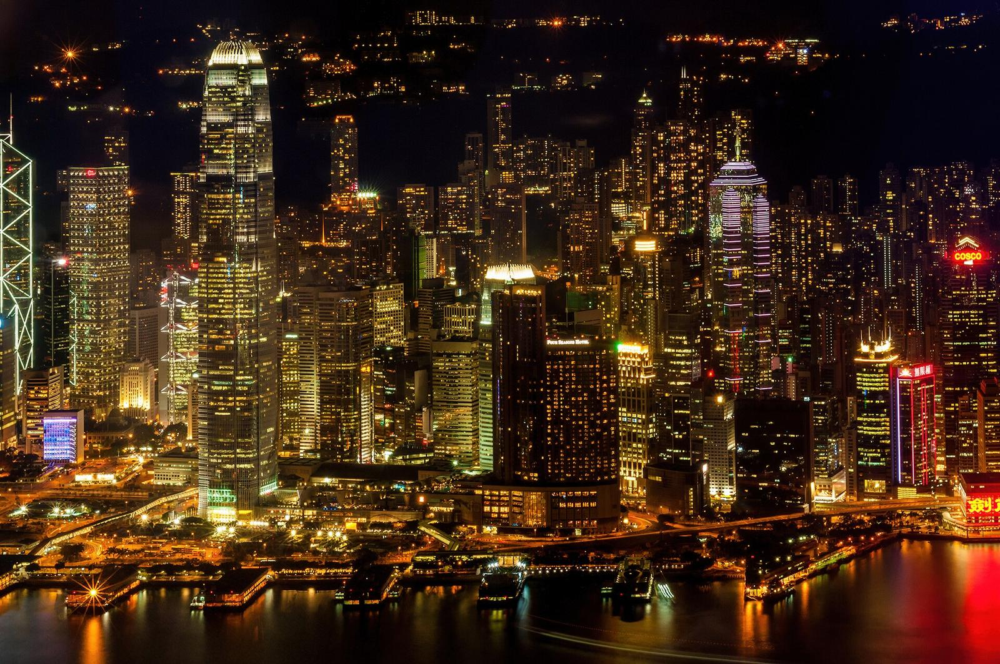
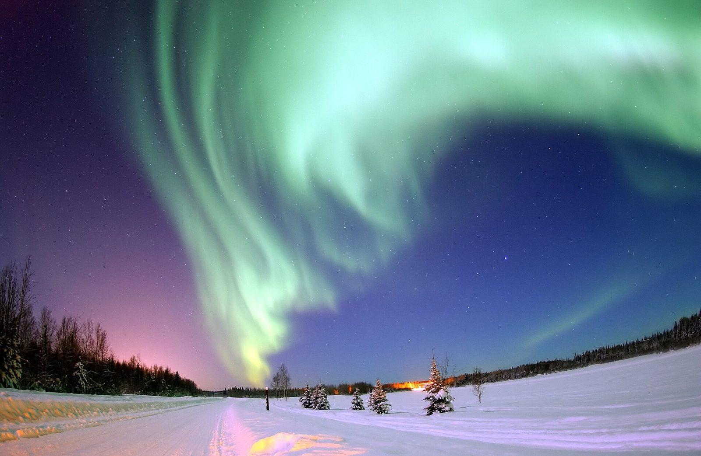

Amostra Liquid Glass
Nova página
Vidro líquido que refrata o conteúdo ao vivo, com fallback em blur. Abrir a amostra →
Role a página: o menu no topo se recolhe num botão redondo de vidro, e a barra de pesquisa lá embaixo encontra qualquer palavra nesta página.
Nova página
Vidro líquido que refrata o conteúdo ao vivo, com fallback em blur. Abrir a amostra →
Navegação
No topo da página o menu aparece inteiro. Ao rolar, a pílula de vidro se transforma num botão redondo com três pontos, e o conteúdo ganha destaque. Toque nos três pontos para abrir o menu de novo.

Busca
Digite uma palavra na barra de vidro lá embaixo, como “vidro” ou “foto”: cada ocorrência fica destacada e o contador mostra “1 de N”. Enter vai para a próxima, Shift+Enter volta e Esc limpa. Acentos e maiúsculas não importam.
Transparência
O fundo é um único gradiente translúcido, sem formas. Ele começa e termina na mesma cor, que também é a cor usada pelo navegador atrás das barras, então o topo da tela parece continuar a página.
Material
Cada cartão é vidro fosco sobre o gradiente, com luz suave nas bordas em vez de linhas finas. Sem JavaScript, os mesmos cartões usam um blur em CSS.
Foto
A coluna usa a largura disponível e se limita a 564px em telas maiores; os controles de vidro ficam por cima enquanto a página rola.
